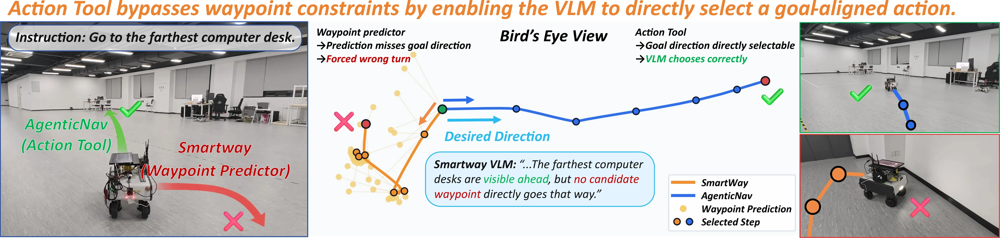
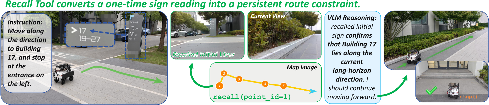

On-demand depth
Request metric depth at selected pixels instead of parsing a dense depth map.
query_depth
inspect metric evidence
recall
retrieve only what matters
move_to
select any visible pixel
stop
finish at the goal
Additional video demonstrations will be added to this page.
View the illustrated tool demonstrations belowZero-shot vision-and-language navigation in continuous environments (VLN-CE) has recently become feasible with large vision-language models (VLMs). Existing methods typically rely on learned waypoint predictors to propose navigable actions. This limits the model's action space and fails to leverage depth inputs effectively. Moreover, memory is commonly handled by accumulating long textual or visual histories, which overwhelms the prompt context. In this paper, we rethink zero-shot VLN-CE as an agentic interface between the VLM and the environment, and present AgenticNav, a lightweight navigation harness that exposes action, depth, and memory as callable tools. Instead of choosing from predicted waypoints, the action tool allows the VLM to directly select a target pixel in RGB observations, converting it into executable motion. Depth is exposed through an on-demand pixel-depth tool, enabling the VLM to request precise metric distances only where they matter. For memory, AgenticNav uses an agentic memory architecture combining reasoning text history and a compact map image, paired with a recall tool that allows the VLM to selectively revisit past visual observations. On R2R-CE, AgenticNav achieves state-of-the-art (SOTA) zero-shot performance under same VLM comparison, reaching 76% success rate and 66.50% SPL. Ablation experiments validate the effectiveness of our tool and memory designs, while backbone evaluations demonstrate more consistent navigation gains as VLMs improve, highlighting the harness's potential to benefit from future VLM advances. Real-world experiments on two distinct robotic platforms further demonstrate its zero-shot generalization and adaptability.
The VLM decides what evidence it needs; deterministic tools handle geometry, memory retrieval, and safety.
Request metric depth at selected pixels instead of parsing a dense depth map.
Keep recent reasoning and action history alongside a compact trajectory map, and retrieve past views only when they become relevant.
Choose any visible target point, then convert it into safe, executable continuous motion.

Success rate on the shared 100-episode R2R-CE val_unseen protocol with Gemini-3.7-Flash.
Success weighted by path length on the same simulation protocol.
Success-rate improvement over SmartWay with Gemini-3.7-Flash, from 54% to 76%.
Four-view AgenticNav achieves 54.3% success across 35 real-world tasks, compared with 22.9% for SmartWay.
Results correspond to the submitted manuscript. Please refer to the paper for the complete tables, metrics, and evaluation protocol.


